Pelatihan Pegawai BRIN
Ketidakpastian Inversi Vs
dari HVSR dan SPAC
Prinsip, kasus Bantul, dan cara melaporkan model Vs beserta ketidakpastiannya
Ir. Wiwit Suryanto · Lab. Geofisika UGM · 27 Oktober 2026
Pertanyaan pemantik
Vs30 di IMO: 346 atau 620 m/s?
A Lokasi bor dan stasiun
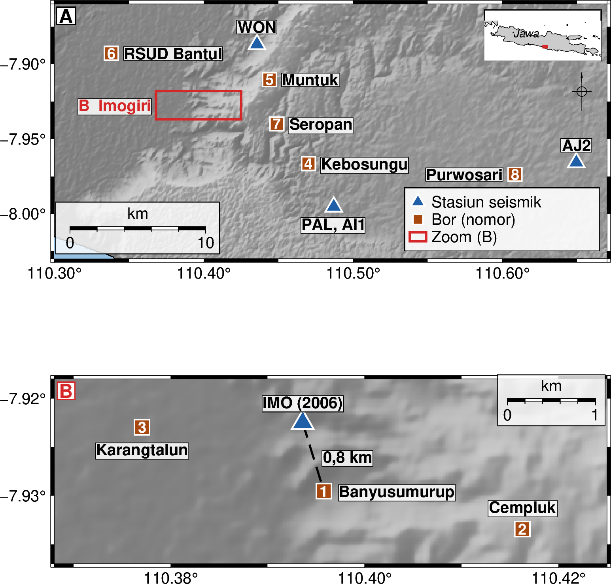
IMO berjarak 0,8 km
dari bor 1 (Banyusumurup).
B Data: HVSR stasiun IMO
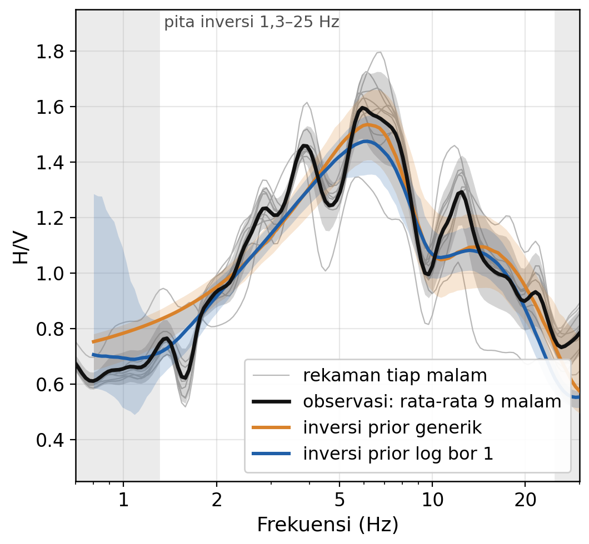
9 malam, 4.158 jendela;
kedua inversi cocok dengan data.
C Hasil: dua prior, dua Vs30
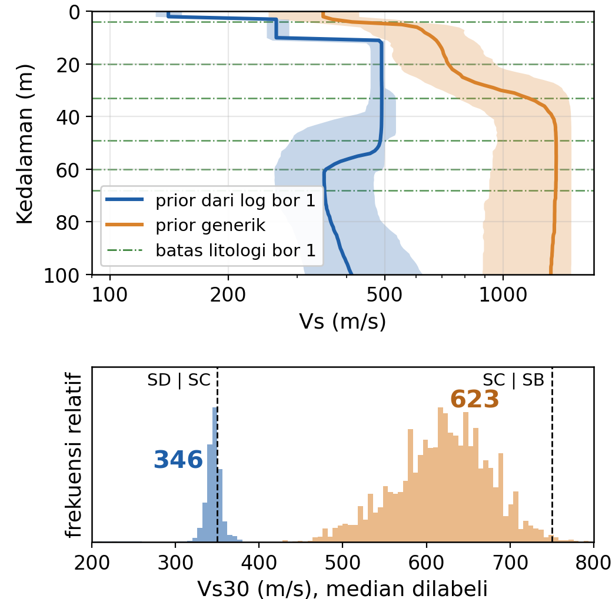
Prior log bor 1: 346 m/s
Prior generik: 623 m/s
IMO 2006; Vs30 median posterior. Batas kelas SNI: SD/SC 350, SC/SB 750 m/s.
02
Pembuka
Peta Presentasi
1
Data dan prinsip
Apa yang diukur dan seberapa baik datanya
2
Forward model
Dari model bumi 1D ke kurva HVSR
3
Parameterisasi dan prior
Jumlah lapisan, batas Vs, peran geolog
4
Inversi dan non-unikness
Satu data, banyak model; tambahan SPAC
5
Posterior dan Vs30
Dari satu garis ke distribusi dan kelas SNI
6
Kasus dan pelaporan
Validasi, keterbatasan, template laporan
Benang merah: data mikrotremor → model Vs → seberapa yakin kita → cara memakainya bersama geolog.
Ketidakpastian inversi Vs · HVSR dan SPAC
03
Kerangka
Peta Sumber Ketidakpastian
| Sumber | Contoh pada kasus Bantul | Cara menangani |
|---|---|---|
| Noise data (aleatorik) | Antar-malam ±0,03–0,08 ln H/V | Error bar realistis |
| Teori forward HVSR (epistemik) | Hanya ellipticity Rayleigh | Bandingkan teori, tambah σ_extra |
| Parameterisasi (epistemik) | Halfspace 25–73 m untuk 2–5 lapisan | Multi-parameterisasi, trans-D |
| Prior dan batas (subjektif) | Vs30 IMO 346 atau 620 m/s | Uji sensitivitas prior |
| Asumsi medan SPAC (bias) | Mode dasar, sumber merata | Cek konsistensi, mode tinggi |
| Picking dan numerik | AJ2 ditolak oleh QC | QC, replikasi analis, R-hat |
Aleatorik: acak. Epistemik: keterbatasan asumsi dan pengetahuan.
Ketidakpastian inversi Vs · HVSR dan SPAC
04
Data dan prinsip
Data Studi Kasus
| Bor | Stasiun terdekat | Jarak | Data |
|---|---|---|---|
| 1 Banyusumurup | IMO (2006) | 0,8 km | 9 malam |
| 5 Muntuk | WON (2006) | 2,8 km | 9 malam |
| 4 Kebosungu | PAL (2006), AI1 (2004) | 3,7 km | 10 dan 9 malam |
| 8 Purwosari | AJ2 (2004) | 4,6 km | ditolak QC |
| 2, 3, 6, 7 | tidak ada stasiun layak | - | - |
NYATA
HVSR dari noise kontinu stasiun seismik temporer
ASUMSI
Vs per litologi dari log bor; log tidak memuat Vs
SINTETIK
Dispersi SPAC; kebenaran ditetapkan dari litologi bor 1
Stasiun tidak berada di titik bor (0,8–3,7 km): baca kesimpulan per titik dengan ini.
05
Data dan prinsip
Vs dan Klasifikasi Situs
| Kelas | Vs30 (m/s) | Material |
|---|---|---|
| SA | lebih dari 1500 | Batuan keras |
| SB | 750–1500 | Batuan |
| SC | 350–750 | Tanah sangat padat dan batuan lunak |
| SD | 175–350 | Tanah sedang |
| SE | kurang dari 175 | Tanah lunak |
Vs30 = 30 / Σ (hᵢ / Vsᵢ)
Rata-rata harmonik: waktu tempuh gelombang geser di 30 m teratas.
Lapisan lambat yang dangkal mendominasi Vs30, dan itu bagian yang paling sulit dijangkau mikrotremor.
Klasifikasi situs SNI 1726:2019 (kelas SF, situs khusus, tidak ditampilkan)
06
Data dan prinsip
Dua Jendela ke Bawah Permukaan
| HVSR (satu stasiun) | SPAC (array) | |
|---|---|---|
| Mengukur | Frekuensi resonansi f₀ dan bentuk kurva | Kurva dispersi kecepatan fase |
| Mengikat | Rasio Vs/H, bukan keduanya | Vs(z) pada kedalaman yang dijangkau |
| Kelebihan | Murah, cepat, satu titik | Kuantitatif untuk Vs absolut |
| Kelemahan | Trade-off Vs–H, bergantung teori | Butuh ruang dan array; jangkauan dibatasi aperture |
Bersama-sama, keduanya memisahkan Vs dari H.
Ketidakpastian inversi Vs · HVSR dan SPAC
07
Data dan prinsip
Trade-off Vs dan Ketebalan
f₀ ≈ Vs / 4H
Satu lapisan di atas halfspace dengan kontras impedansi cukup besar (kira-kira lebih dari 2–3).
5 Hz
Vs = 150 m/s, H = 7,5 m
5 Hz
Vs = 300 m/s, H = 15 m
5 Hz
Vs = 600 m/s, H = 30 m
Satu f₀, banyak pasangan (Vs, H).
Ketidakpastian inversi Vs · HVSR dan SPAC
08
Data dan prinsip
Akuisisi dan Pengolahan
HVSR
- Durasi dan kopling sensor mengikuti pedoman SESAME
- Jendela, anti-trigger, smoothing Konno–Ohmachi
- Kriteria SESAME menilai puncak, bukan seluruh kurva
- Amplitudo puncak bukan faktor amplifikasi
SPAC
- Aperture menentukan λ maksimum, spasi minimum menentukan λ minimum
- ρ(r, ω) = J₀(ωr / c(ω))
- Mengandaikan komponen vertikal, mode dasar Rayleigh, medan stasioner
- Pelanggaran asumsi memberi bias sistematik, bukan acak
Ketidakpastian inversi Vs · HVSR dan SPAC
09
Data dan prinsip
Kualitas Data HVSR
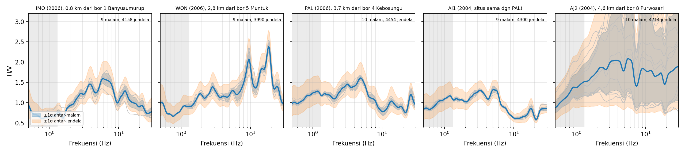
IMO, WON, PAL, AI1: kurva stabil antar-malam (σ 0,03–0,08 ln).
AI1 (2004) dan PAL (2006), situs sama: puncak lemah yang sama sekitar 5 Hz.
AJ2: kanal horizontal makin berisik sepanjang kampanye; dikeluarkan.
Noise malam (00–04 WIB), jendela 60 s, geometric mean horizontal; band abu-abu di bawah 1,3 Hz tidak dipakai.
10
Data dan prinsip
Galat Data HVSR
±0,24
sebaran antar-jendela 60 s pada IMO
±0,004
galat rata-rata bila 4.158 jendela dianggap independen
±0,084
sebaran antar-malam (9 malam)
Jendela dalam satu malam tidak independen. Galat yang jujur adalah galat antar-malam, lebih dari 20 kali galat naif.
Satuan ln(H/V), median pada 1,3–25 Hz, stasiun IMO.
11
Forward model
Model Forward dan Teori HVSR
Lapisan 1: Vs₁, h₁
Lapisan 2: Vs₂, h₂
Lapisan 3: Vs₃, h₃
Halfspace: Vs, ν, ρ
Data paling sensitif terhadap Vs dan h; Vp (ν) dan ρ jauh lebih lemah.
| Teori | Asumsi | Catatan |
|---|---|---|
| Ellipticity Rayleigh | Hanya Rayleigh mode dasar | Dipakai pada kasus ini |
| SH transfer function | Gelombang SH vertikal | Proxy f₀, bukan HVSR noise |
| Diffuse field (DFA) | Medan difus: Rayleigh, Love, gelombang badan | Amplitudo berbeda dari ellipticity |
Pilihan teori adalah asumsi, dan asumsi adalah sumber ketidakpastian epistemik.
Ketidakpastian inversi Vs · HVSR dan SPAC
12
Parameterisasi dan prior
Jumlah Lapisan
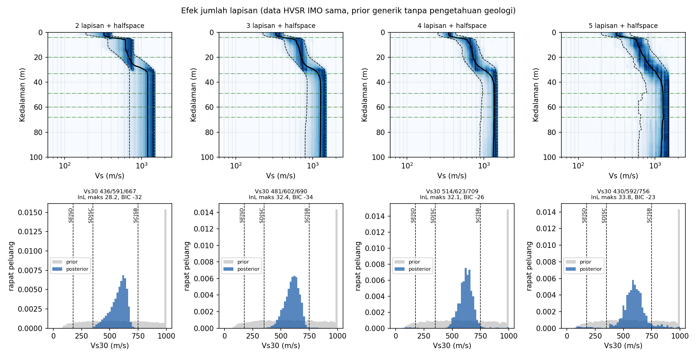
591 / 602 / 623 / 592
Vs30 median (m/s) untuk 2, 3, 4, 5 lapisan
25 → 73 m
kedalaman halfspace median, dari 2 hingga 5 lapisan
BIC −32, −34, −26, −23
selisih kecil; BIC mengandaikan galat independen
Data HVSR IMO sama; prior generik tanpa pengetahuan geologi.
13
Parameterisasi dan prior
Parameter Bebas dan Terkunci
| Parameter | Sensitivitas data | Perlakuan di kasus ini |
|---|---|---|
| Vs dan ketebalan h | Tinggi | Dicari dari data |
| Vp (rasio Poisson ν) | Lemah, terasa di HVSR | Satu ν bersama, prior 0,30–0,49 |
| Densitas ρ | Sangat lemah | Relasi Gardner, tidak dicari |
| Galat tambahan σ_extra | Tidak berlaku | Dicari dari data, prior 0–0,5 ln |
Jangan mengunci diam-diam: uji sensitivitas terhadap ν, ρ, dan batas prior.
Pada IMO, ν menempel batas bawah prior 0,30 (45% sampel): tanda teori atau prior tidak cocok dengan data.
Ketidakpastian inversi Vs · HVSR dan SPAC
14
Parameterisasi dan prior
Prior dari Log Bor
Bor 1 · sedimen lunak
dipasangkan dengan IMO
L1: h 2–8, Vs 80–220
L2: h 8–30, Vs 120–320
L3: h 15–50, Vs 180–500
L4: h 20–80, Vs 220–650
HS: Vs 300–1400
Bor 5 · batu pasir, breksi
dipasangkan dengan WON
L1: h 1–5, Vs 80–250
L2: h 5–30, Vs 250–700
L3: h 15–80, Vs 500–1400
HS: Vs 700–2000
Bor 4 · batugamping
dipasangkan dengan PAL dan AI1
L1: h 1–6, Vs 80–250
L2: h 5–30, Vs 250–800
L3: h 20–80, Vs 500–1500
HS: Vs 800–2200
ASUMSI
Rentang dari litologi, bukan pengukuran. h dalam m, Vs dalam m/s.
Ketebalan log-seragam, Vs seragam; lapisan lebih lunak dari di atasnya diizinkan.
15
Parameterisasi dan prior
Prediksi dari Litologi
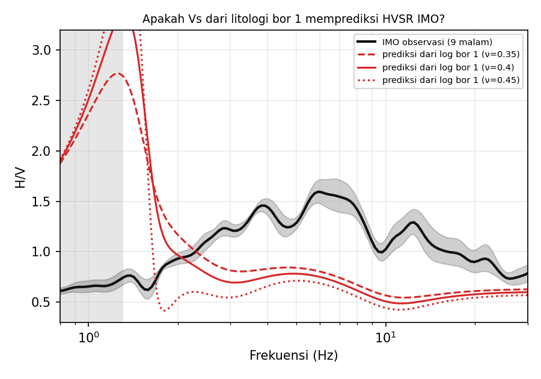
Model dari log bor 1 tidak memprediksi HVSR IMO
Prediksi: puncak kuat sekitar 1,3 Hz, lalu H/V 0,45–0,85 pada 3–10 Hz.
Observasi: tanpa puncak di 1,3 Hz, H/V 1,0–1,6 pada 3–10 Hz.
Tiga kemungkinan: litologi berbeda dalam 0,8 km, prior Vs terlalu lunak, atau keterbatasan teori.
HVSR saja tidak memilah ketiganya.
Merah: model Vs dari litologi bor 1 (asumsi), ν 0,35–0,45. Hitam: IMO, 9 malam.
16
Parameterisasi dan prior
Prior dan Batas Pencarian
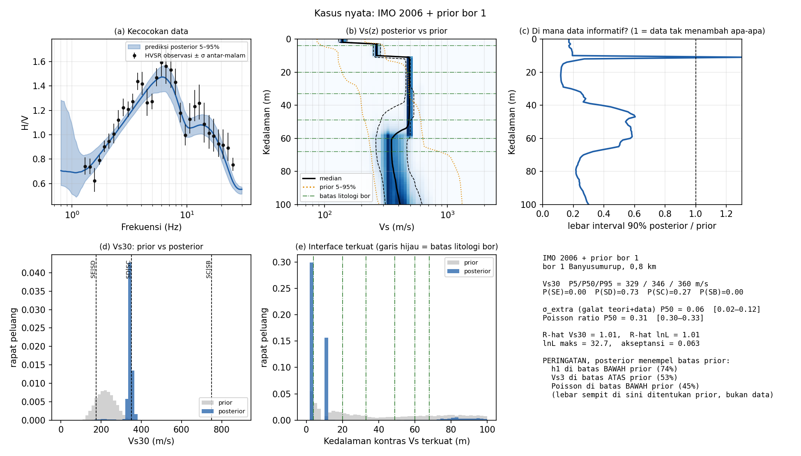
500 m/s
Vs lapisan ke-3 menempel batas atas prior (53% sampel)
329–360
Vs30 posterior (m/s), di luar rentang prior 149–300
Lebar sempit berasal dari prior, bukan dari data.
IMO 2006 dengan prior bor 1. Garis hijau: batas litologi bor. Posterior 5–95%.
17
Pesan kunci
Parameterisasi dan prior adalah hipotesis geologi yang diuji dengan data.
Libatkan geolog sejak awal, bukan sesudah inversi selesai.
18
Inversi
Formulasi Inversi
Misfit dan galat
χ² = Σ ((d_obs − d_pred) / σ)²
σ² = σ_data² + σ_extra²
σ_data: galat antar-malam. σ_extra: dicari dari data, menyerap galat teori yang tak tercatat.
Cara mencari
- Lokal (linearisasi): cepat, bergantung model awal
- Global (NA, GA, PSO, SA): mencari model yang cocok
- MCMC: mengambil sampel distribusi posterior
Pencarian global saja bukan kuantifikasi ketidakpastian.
Di sini: DE-MC, 24–26 rantai dalam 4 ensemble independen per kasus.
19
Inversi
Ensemble dan Posterior
| Ensemble "misfit di bawah ambang" | Posterior Bayes (MCMC) | |
|---|---|---|
| Isi | Model dengan misfit di bawah ambang | Distribusi peluang p(m | d) |
| Hasil | Himpunan model, tanpa peluang | Median, interval kredibel, peluang kelas |
| Bergantung | Ambang misfit, batas pencarian, iterasi | Prior, likelihood (galat), konvergensi |
| Diperiksa | Sebaran bukan interval kredibel | R-hat, beberapa ensemble |
Sebaran ensemble bukan interval kredibel.
NA-II (Sambridge 1999) dapat memberi penilaian Bayesian, tetapi jarang yang ditampilkan.
20
Inversi
Non-unikness pada Data Nyata
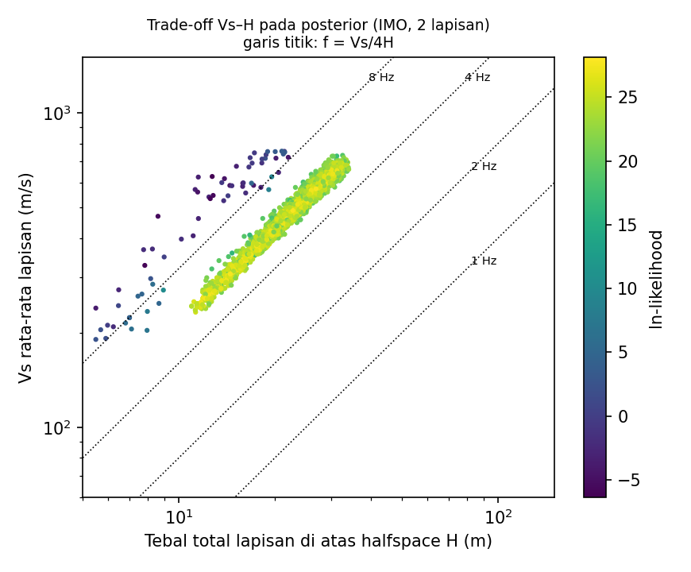
Posterior IMO tersusun sepanjang garis f = Vs/4H
Tebal 15–31 m dengan Vs rata-rata 310–670 m/s sama-sama cocok dengan data.
Semuanya memberi f = Vs/4H sekitar 5,0–5,7 Hz, mendekati puncak 6 Hz yang teramati.
Inversi tidak menemukan satu model; ia menemukan punggung kesesuaian.
IMO 2006, 2 lapisan, prior generik. Warna: ln-likelihood. Angka: persentil 5–95%.
21
Inversi
Inversi Gabungan HVSR dan SPAC
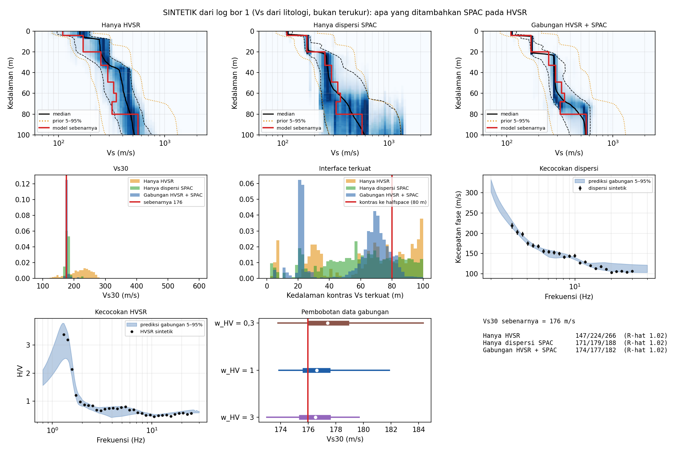
SINTETIK
| Data | Vs30 P5–P95 |
|---|---|
| HVSR saja | 147–266 |
| SPAC saja | 171–188 |
| Gabungan | 174–182 |
| Kebenaran | 176 |
Noise acak sama dengan galat yang diasumsikan: skenario terbaik. Rentang gabungan masih melintasi batas SE/SD di 175.
Sintetik dari log bor 1; Vs ditetapkan dari litologi, bukan terukur. Satuan m/s.
22
Inversi
Pembobotan Data Gabungan
SINTETIK
| Bobot HVSR | Vs30 P5 / P50 / P95 (m/s) |
|---|---|
| 0,3 | 174 / 177 / 184 |
| 1 | 174 / 177 / 182 |
| 3 | 173 / 177 / 180 |
Kebenaran 176 m/s. Data konsisten: bobot hampir tidak berpengaruh.
Presisi bukan akurasi.
Bila data tidak konsisten (footprint HVSR dan SPAC berbeda, struktur lateral), satu data bisa mendominasi: posterior sempit tetapi bias.
Periksa: invert tiap data sendiri dulu, lihat tumpang tindih posteriornya.
Ketidakpastian inversi Vs · HVSR dan SPAC
23
Posterior dan Vs30
Dari Satu Model ke Distribusi
p(m | d) ∝ p(d | m) · p(m)
Prior
pengetahuan geologi sebelum mengukur
×
Likelihood
data dan galatnya
=
Posterior
pengetahuan kita setelah mengukur
Konvergensi: R-hat 1,00–1,02 untuk Vs30 dan lnL pada semua 15 run, dari 4 ensemble independen per run.
DE-MC (ter Braak 2006), burn-in 50%, 24–26 rantai per ensemble.
24
Posterior dan Vs30
Membaca Posterior
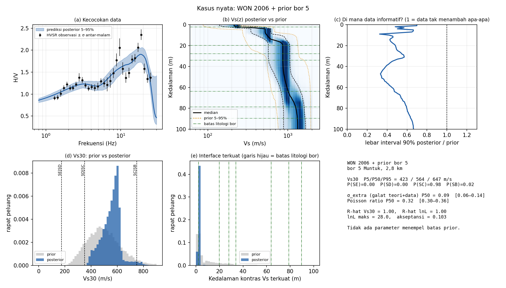
2–3 m
interface terkuat di WON; topsoil bor 5 setebal 2,2 m (jarak 2,8 km)
0,35–0,65
rasio lebar interval posterior terhadap prior di bawah 40 m: informasi data di sana terbatas
Baca: densitas Vs(z) terhadap prior (b), rasio lebar (c), interface terkuat (e).
WON 2006 dengan prior bor 5. Vs30 P5/P50/P95: 423 / 564 / 647 m/s (prior 310–721).
25
Posterior dan Vs30
Reproduksi Antar-Kampanye
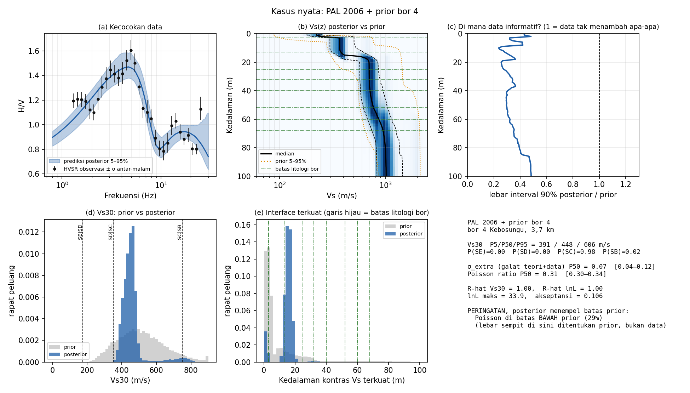
| PAL 2006 | AI1 2004 | |
|---|---|---|
| Vs30 P50 | 448 | 424 |
| Vs30 P5–P95 | 391–606 | 398–729 |
| Interface terkuat | 15 m | 13 m |
| Kelas SC | 0,98 | 0,97 |
Situs sama, dua tahun berselang: median Vs30 berbeda 24 m/s (5%).
AI1 punya ekor atas lebih panjang dan Vs halfspace menempel batas bawah prior.
Figur: PAL 2006 dengan prior bor 4. Vs30 dalam m/s; interface: kontras Vs terkuat.
26
Posterior dan Vs30
Vs30 dan Kelas SNI
| Kasus | Vs30 P5–P95 | SE | SD | SC | SB |
|---|---|---|---|---|---|
| IMO, prior geologi | 329–360 | 0 | 0,73 | 0,27 | 0 |
| IMO, prior generik | 514–709 | 0,01 | 0 | 0,97 | 0,02 |
| WON, prior bor 5 | 423–647 | 0 | 0 | 0,98 | 0,02 |
| PAL 2006, prior bor 4 | 391–606 | 0 | 0 | 0,98 | 0,02 |
| AI1 2004, prior bor 4 | 398–729 | 0 | 0 | 0,97 | 0,03 |
| Sintetik gabungan (176) | 174–182 | 0,12 | 0,88 | 0 | 0 |
Laporkan distribusi dan peluang kelas, bukan satu angka.
Kolom SE–SB: peluang posterior kelas SNI 1726:2019. Vs30 dalam m/s. Hasil nyata bergantung prior.
27
Posterior dan Vs30
Rangkuman Sumber Ketidakpastian
| Sumber | Bukti dari kasus kita | Tindakan |
|---|---|---|
| Data | Galat naif 0,004 vs antar-malam 0,084 | Galat antar-malam |
| Teori forward | IMO: ν di batas 0,30; prediksi litologi meleset | Bandingkan teori |
| Parameterisasi | Halfspace median 25–73 m untuk 2–5 lapisan | Multi-parameterisasi |
| Prior dan batas | Vs30 IMO 346 atau 620 m/s | Uji sensitivitas |
| Asumsi SPAC | Belum diuji: SPAC sintetik | Cek mode dan bias |
| QC dan subjektif | AJ2 ditolak: horizontal makin berisik | QC, replikasi |
Sebagian besar bersifat epistemik: tidak hilang dengan merekam lebih lama.
Ketidakpastian inversi Vs · HVSR dan SPAC
28
Kasus dan keterbatasan
Validasi terhadap Log Bor
| Pasangan | Hasil | Penilaian |
|---|---|---|
| WON dan bor 5 (2,8 km) | Interface terkuat 2–3 m; topsoil bor 2,2 m | Sejalan |
| PAL, AI1 dan bor 4 (3,7 km) | Interface 13–15 m; batas litologi bor di 13 m | Kebetulan sejalan, belum bukti |
| IMO dan bor 1 (0,8 km) | Model litologi tidak memprediksi HVSR | Tidak sejalan, penyebab belum terpisah |
Log tidak memuat Vs atau N-SPT, dan bor 1, 5, 4 tidak mencapai basement: validasi hanya kualitatif.
Batas litologi belum tentu kontras Vs.
Ketidakpastian inversi Vs · HVSR dan SPAC
29
Kasus dan keterbatasan
Dari Titik ke Peta
Banyak titik HVSR
Peta f₀
Peta kedalaman sedimen atau bedrock, dikalibrasi dengan array
OpenHVSR-Inversion
- MATLAB, GPL-3.0, v4.0.2 (Agustus 2023)
- Memodelkan dan menginversi banyak HVSR sekaligus untuk model 2D/3D
- Contoh data sintetik dan nyata tersedia
Catatan
- HVSR saja membawa trade-off Vs–H ke seluruh peta
- Butuh lisensi MATLAB
- Periksa teori forward dan penanganan ketidakpastian di manualnya
github.com/sedysen/OpenHVSR-Inversion. Ringkasan dari README dan daftar file; manual belum ditinjau.
30
Kasus dan keterbatasan
Keterbatasan dan Jebakan
Struktur 2D dan 3D
Tepi cekungan dan lereng melanggar asumsi 1D.
Puncak non-geologis
Sumber industri dapat menghasilkan puncak HVSR.
Lapisan lunak tersembunyi
Velocity reversal sering tak terdeteksi.
Pita sensor
Sensor 1 Hz: data dipakai di atas 1,3 Hz; resonansi sedimen tebal tidak terlihat.
Prior adalah asumsi
Rentang Vs per litologi mengubah jawaban, seperti pada IMO.
Satu model tanpa ketidakpastian
Garis median menyembunyikan trade-off dan peran prior.
Ketidakpastian inversi Vs · HVSR dan SPAC
31
Penutup
Pesan Penutup
1
HVSR dan SPAC saling melengkapi; gabungkan bila bisa.
2
Kualitas data membatasi kualitas model.
3
Parameterisasi dan prior adalah hipotesis geologi: libatkan geolog sejak awal.
4
Posterior sempit belum tentu ditentukan data; periksa batas prior.
5
Laporkan Vs beserta ketidakpastiannya, bukan satu garis.
6
Gunakan distribusi Vs30 dan peluang kelas untuk keputusan.
Ketidakpastian inversi Vs · HVSR dan SPAC
32
Penutup
Template Pelaporan Vs
Laporkan
- Prior dan batas pencarian
- Galat data dan cara menghitungnya
- Parameterisasi dan alasannya
- Jumlah run, iterasi, kriteria misfit
- Konvergensi (R-hat)
- P5/P50/P95: Vs(z), interface, Vs30
- Tes sintetik dan uji sensitivitas
Tanda bahaya saat mereview
- Satu garis Vs tanpa pita ketidakpastian
- Tanpa prior atau galat data
- Jumlah lapisan dipilih sembarang
- Amplitudo puncak HVSR dibaca sebagai amplifikasi
- Posterior sempit menempel batas prior
Ketidakpastian inversi Vs · HVSR dan SPAC
33
Penutup
Perangkat Lunak
| Alat | Fungsi | Catatan |
|---|---|---|
| Geopsy dan Dinver | Pengolahan HVSR dan array; inversi NA | Ensemble, bukan posterior penuh |
| hvsrpy | Pengolahan HVSR dengan statistik | Python |
| swprocess | Pemrosesan MASW; statistik dispersi | Python; cek lisensi |
| SWinvert | Inversi dispersi multi-parameterisasi | Python |
| HV-Inv | Inversi HVSR dengan diffuse field | García-Jerez dkk. 2016 |
| OpenHVSR-Inversion | HVSR banyak titik, model 2D/3D | MATLAB, GPL-3.0 |
| disba + DE-MC | Forward model dan sampler kasus ini | Skrip penulis, belum dipublikasikan |
Periksa versi dan lisensi sebelum dipakai. Hands-on dilanjutkan oleh Mas Kaka.
34
Diskusi
Bawa data riset Anda
Apa prior geologi data Anda?
Berapa galat data, dan dihitung dari apa?
Parameterisasi apa yang dipilih, dan mengapa?
Terima kasih.
Lampiran
Bacaan Lanjut
HVSR, SPAC, dan teori
- SESAME (2004). Guidelines for the implementation of the H/V technique on ambient vibrations.
- Aki (1957). Space and time spectra of stationary stochastic waves (SPAC).
- Okada (2003). The Microtremor Survey Method.
- Sánchez-Sesma dkk. (2011). A theory for microtremor H/V spectral ratio.
- Piña-Flores dkk. (2017). Inversion of H/V in a layered system using the diffuse field assumption.
- García-Jerez dkk. (2016). Code for forward calculation and inversion of H/V (DFA).
Inversi dan ketidakpastian
- Sambridge (1999). Geophysical inversion with a neighbourhood algorithm, I dan II.
- Bodin dkk. (2012). Transdimensional inversion of receiver functions and surface wave dispersion.
- Arai dan Tokimatsu (2005). Joint inversion of microtremor dispersion curve and H/V spectrum.
- Cox dan Teague (2016). Layering ratios for surface wave inversion without a priori information.
- Vantassel dan Cox (2022). SWprocess: robust estimates of surface wave dispersion uncertainty.
- ter Braak (2006). A Markov chain Monte Carlo version of Differential Evolution.
- Molnar dkk. (2022). Microtremor HVSR for site characterization: state of the art.
Daftar disusun dari ingatan: periksa detail bibliografi sebelum dikutip.
36
Lampiran
Model Galat Data pada IMO
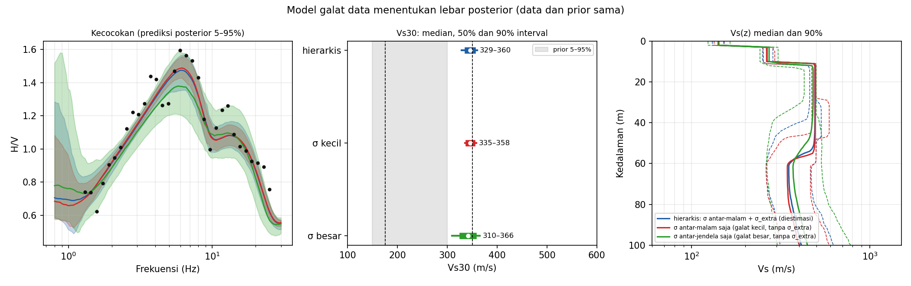
23 / 31 / 56
lebar Vs30 90% (m/s): σ kecil, hierarkis, σ besar
Efek model galat kecil di sini, karena lebar posterior IMO didominasi batas prior.
IMO 2006 dengan prior bor 1; data dan prior sama pada ketiga inversi.
37